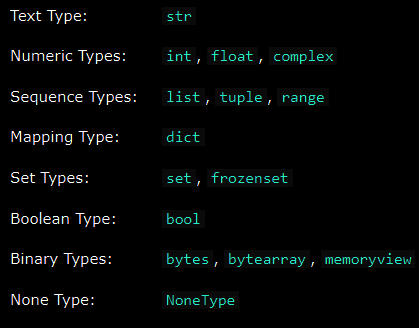

Built-in Data Types
In programming, data type is an important concept.
Variables can store data of different types, and different types can do different things.
Python has the following data types built-in by default, in these categories:

Note: You can get the data type of any object by using the type() function.

Setting the Data Type

Setting the Specific Data Type


sorted(iterable, /, *, key=None, reverse=False) -> sorts a given iterable
reversed(seq) -> reverse the variable given
set([iterable])->sorted() in conjunction -> to get unique sorted variable(set() removes any duplicated values) ->sorted(set( ) )